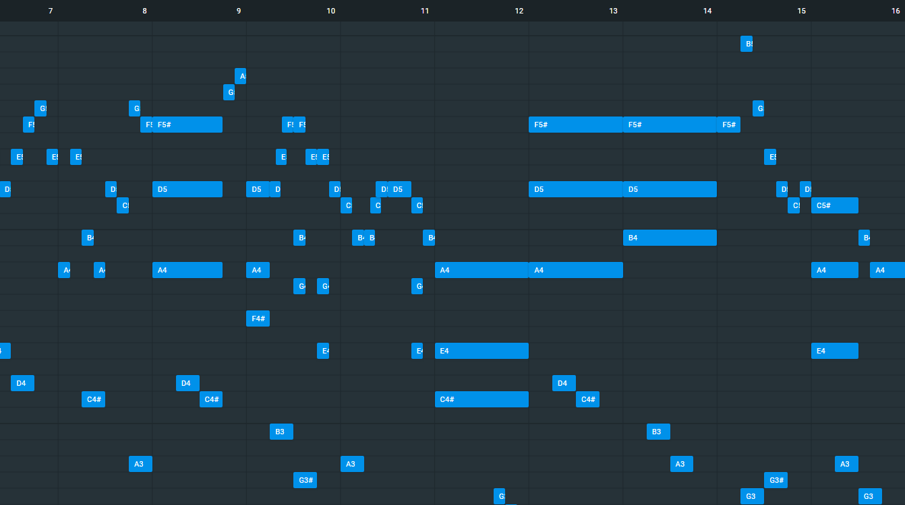
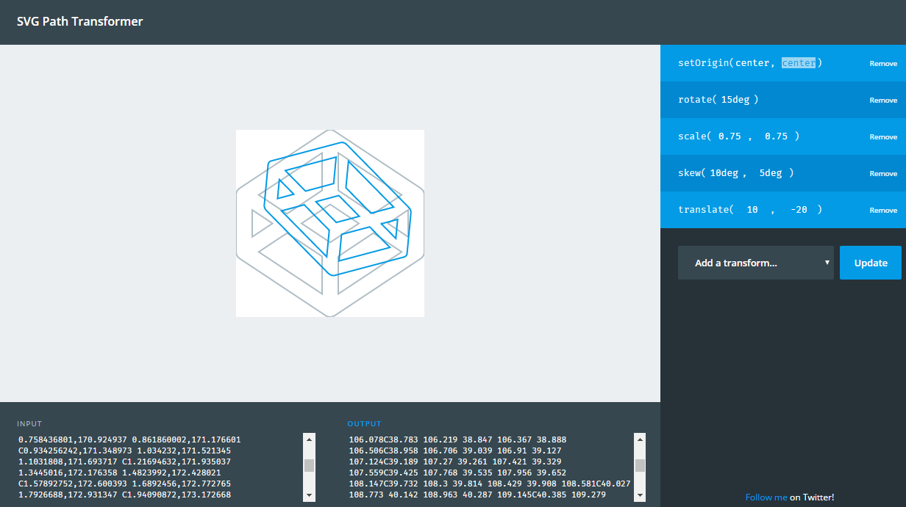
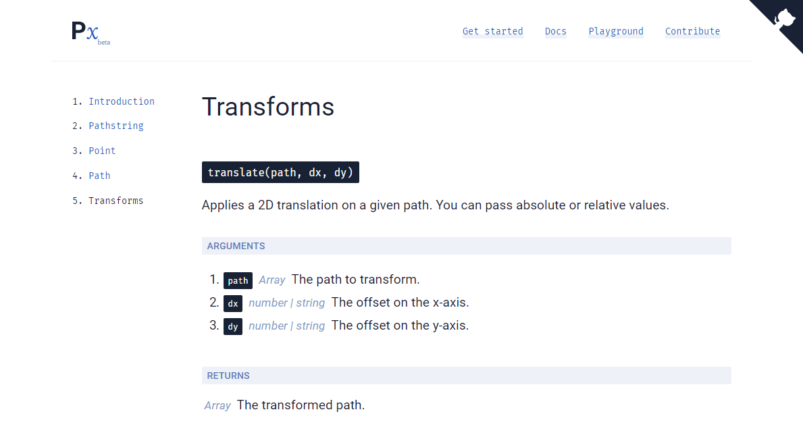
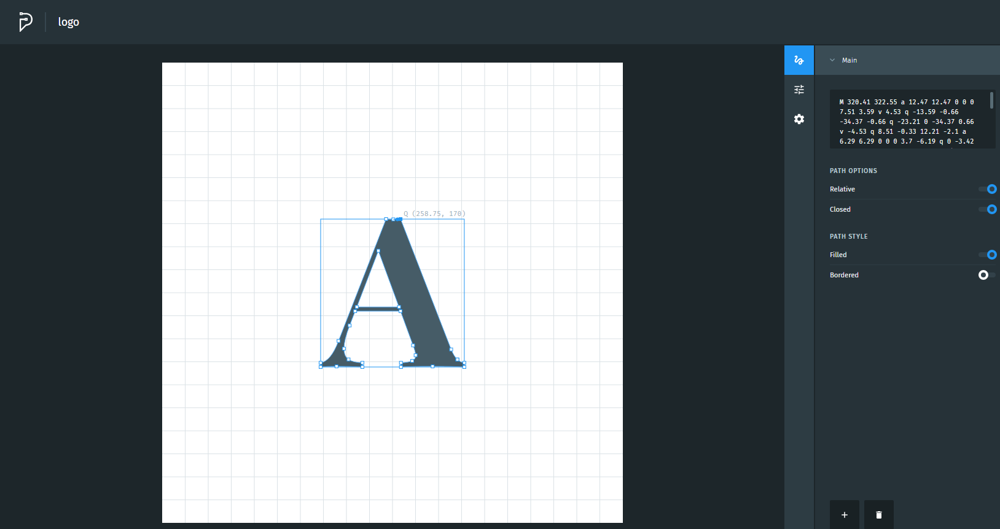
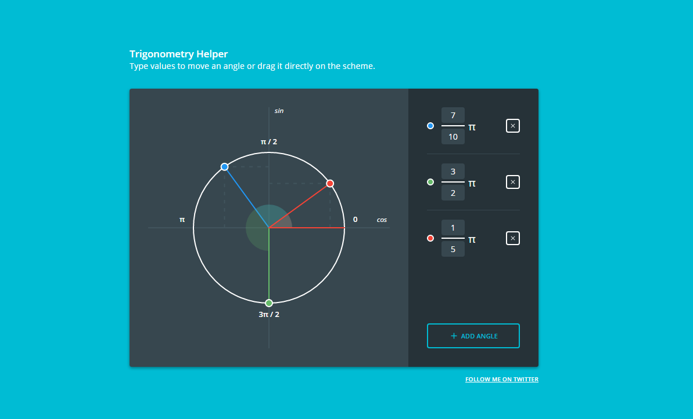

Hi! I'm Anthony Dugois, a 22 year-old creative developer with a strong interest on modern JavaScript stack and Functional Programming.
I'm a perfectionist constantly looking for technical challenge and I always try to produce a clean, well-documented and tested code. If you are as passionate as I am by web development, let's build something cool together!
Feel free to contact me: dev.anthonydugois@gmail.com